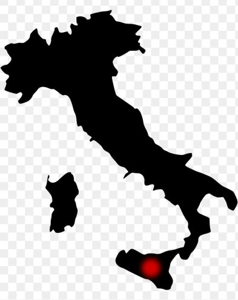

Spaghetti

Spaghetti origins
Few pastas are as universally recognized as spaghetti. With its long, thin strands, it has been a staple of Italian cuisine for centuries, evolving from early pasta traditions in Sicily and Southern Italy. While often linked to Naples, where it gained widespread popularity, spaghetti’s versatility made it a favorite across regions.
In the 19th century, Naples became the heart of dried pasta production, perfecting spaghetti’s firm texture and ability to hold sauces. Over time, it became the foundation for many of Italy’s most famous dishes, from simple Cacio e Pepe to rich, hearty Amatriciana.
Today, spaghetti remains a symbol of Italian culinary tradition, proving that simplicity and quality ingredients create timeless perfection. 🍝